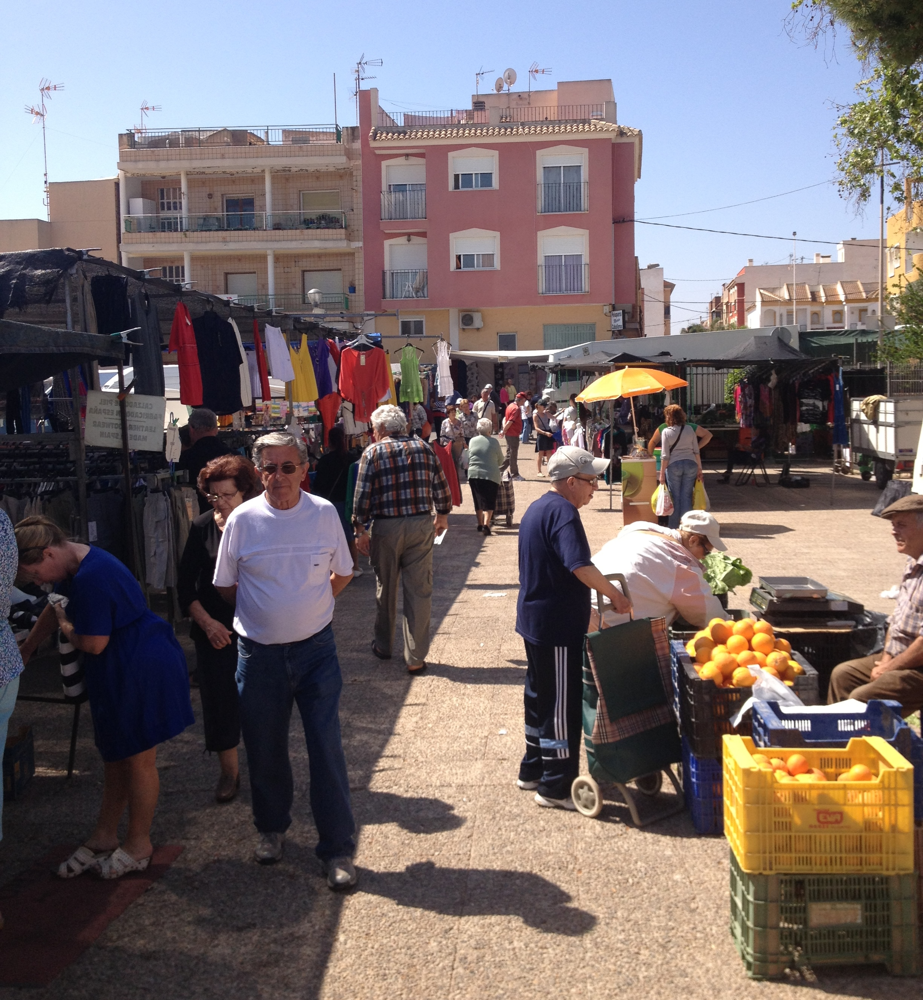

W mieście
Los Alcázares
Spokojny kurort nad Mar Menor z 7 km plaż, promenadą i ciepłym, płytkim morzem — idealnym dla rodzin i dzieci.
 W mieście
W mieście
Promenada i plaże Mar Menor
7 kilometrów palm wzdłuż spokojnych wód Mar Menor. Ciepłe, płytkie morze idealne dla rodzin z dziećmi — bez fal i prądów. Liczne kawiarnie, lody i zachody słońca prosto z plaży.
Windsurfing, kitesurfing i kajakarstwo
Plaże idealne dla dzieci
Promenada z palmami i restauracjami

Każdy wtorekTarg wtorkowy
Co wtorek ulice Los Alcázares zamieniają się w kolorowy targ z lokalnymi produktami, świeżymi owocami i warzywami, odzieżą i rękodziełem. Żywe centrum lokalnego życia.
Świeże lokalne produkty
Rękodzieło i pamiątki
Autentyczna atmosfera
 W mieście
W mieście
Muzeum Lotnictwa
Los Alcázares to kolebka hiszpańskiego lotnictwa — w 1913 roku powstała tu jedna z pierwszych baz lotniczych w Hiszpanii. Muzeum prezentuje zabytkowe samoloty i historię pionierów.
Historia lotnictwa Hiszpanii
Zabytkowe samoloty i artefakty
Wyjątkowe miejsce dla entuzjastów